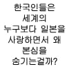

한국인에게 일본인인걸 증명하는법
댓글
다케시마라는 이름의 섬이 많은것도 맞지만
독도를 다케시마라고 지칭하는거는 알고서 하는거임
일본애돌 다케시마 위치 모름 그냥 우리꺼라니까 조선놈들이 우리땅 뺏어 갔다 이렇게 알고있지 대다수는 신경도 안씀
아는 사람은 알고 모르는 사람은 모름
근데 국제분쟁 수준의 독도 문제를 인지하고 있는 사람이면 대체로 알 듯
다케시마 지명 자체가 여러개임
일본은 그걸 ㄴ노린거기도 하고
영토분쟁이 있는ㄴ 독도 위치를 다케시마 어딨는지 아냐고
일본ㅅ사람한테 물으면 모르는것도 관심이 없는것도 있지만
걍 같은이름의 섬이 여러개라 잘 모르는 경우도 있음
주도하는 세력은 독도를 알고 부르는거고
거기에 선동되는 극우 틀딱들은 "뭐라고! 어릴때 옆동네 있던 다케시마를 한국이 불법점거했다고!" 하고 꽥꽥대는거
인식범위가 죄다 달라서 단정할 수가 없지
ㅇㅇ 가짜뉴스임 다케시마가 어딘줄은 아냐? 라고 인터뷰했을때 다들 동명의 다른 섬을 댄 것 뿐, 독도는 날씨 땜에 진입하기 힘든 섬인데, 아무때나 밟고 여행할 수 있는 줄 아는 사람들이 태반임.
아래 남자 한국놈 맞는듯 ㅋㅋㅋㅋㅋㅋㅋㅋㅋㅋㅋㅋㅋㅋㅋㅋㅋㅋㅋㅋㅋㅋㅋ

한국어 할때 억양이 한국인인데 ㅋㅋㅋㅋ
무궁화 스매시 ㅇㅈㄹ ㅋㅋㅋㅋ
와 개잘하네 진짜 ㅋㅋㅋㅋㅋㅋㅋ
ㅅㅂㅋㅋㅋㅋㅋㅋㅋㅋㅋㅋㅋㅋ
저 유튜브는 방 분위기 좋으면 ㅈㄴ 재밌드라 가끔 여자 관심 다 뺏어간다고 질투해서 킥하는 애들도 있고
여자애 두명이 결혼하자 초야해 이러면서 꺄르르 좋아하는데
한명 들어와서 성대모사할때마다 갑분싸되는거 ㅈㄴ웃김ㅋㅋㅋㅋㅋㅋㅋㅋ
아 그 음질안좋은데 계속 관심 뺏어보겠다고 노력하던 놈 ㅋㅋ
무궁화 스매시 ㅋㅋㅋㅋㅋㅋㅋㅋㅋ
아래 남자애는 엄빠 중 한명이 한국인인가보네 ㅋ
ㅋㅋㅋㅋㅋㅋㅋㅋㅋㅋㅋㅋㅋㅋㅋㅋ무궁화스마시
와 목소리 부럽다 무궁화 스매싱
ㅋㅋㅋㅋㅋㅋㅋㅋㅋㅋㅋㅋㅋㅋㅋㅋㅋㅋㅋㅋㅋㅋ
ㅋㅋ근데 저런 컨텐츠 하는 사람도 AI 때문에 조졌네ㅋㅋ
얘는 성대모사만 좋은게아니라 대사칠때 위트가 좋은거라
ㅋㅋㅋㅋㅋㅋ
위아래 다 한국인 아님?ㅋㅋㅋㅋ
예전에 어디서 보기로
독도랑 다케시마랑 다른거라서
우리가 알거 있는 독도랑
일본이 타령하는 다케시마랑 다른걸 두고 이야기 한다는걸 본적 있는데
이거 가짜뉴스 이런거였나